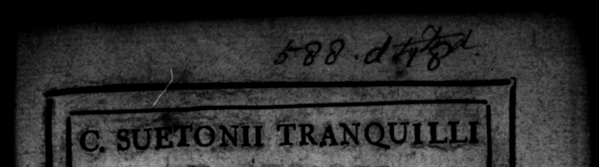

le. 80 Fox TRANQUILLI * XII CESARES, 3 N Fn Un verſione, in qua e ratio, quam maxims Heri potuit, habita 8 EET UB. © WD a} «4 or THE © 26 * 4-74 welve Firſt Roman Em aper Pe | Wair BY | ö C, SUETONIUS TRANQUILLAS, W Tt n/ 4 2 1 Pres TRANSLATION, wherein 4 hey a | "i JN CLARKE, Moſer of the Publick Grammar-School LONDON: N for A. BRTIESwOoR TR, and C. Hr fen at tho Red. Lion in Pater - Neſter- Row. 173%"
